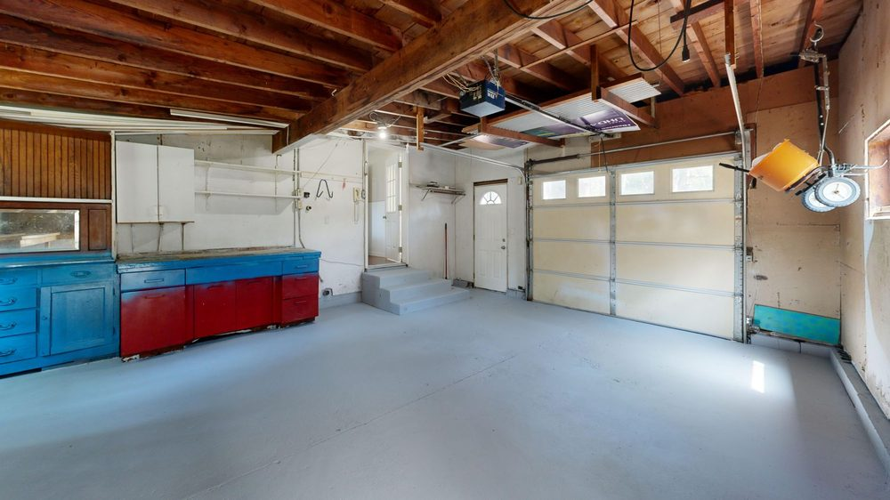
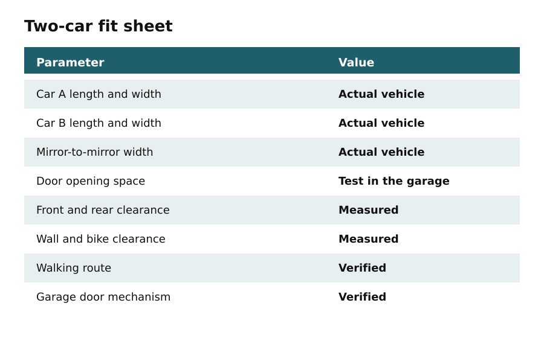
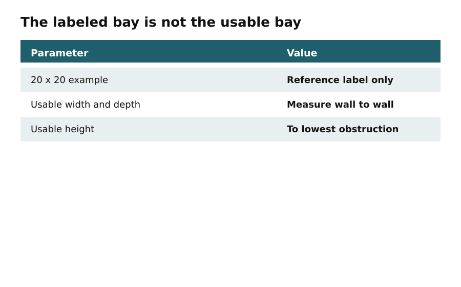
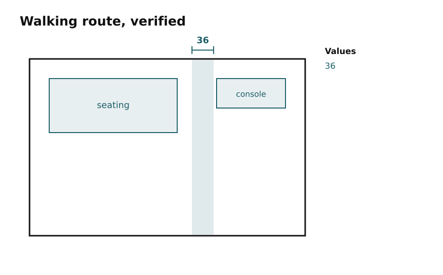
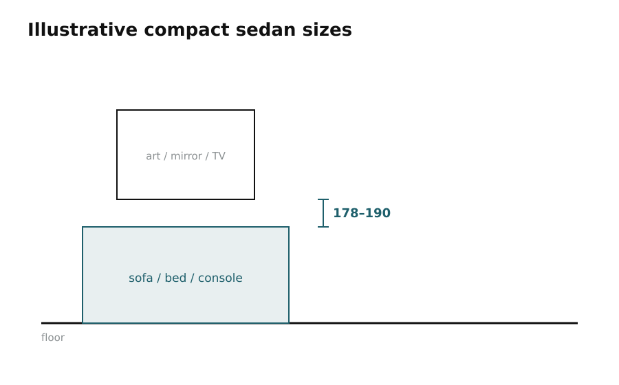
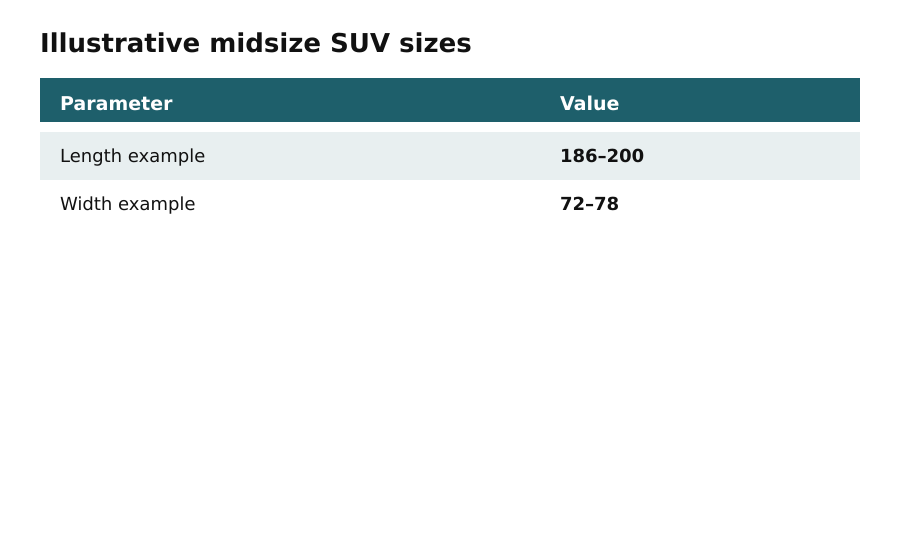
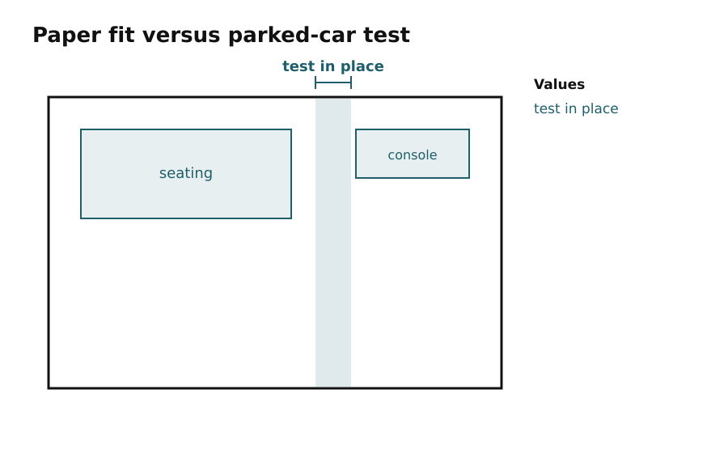
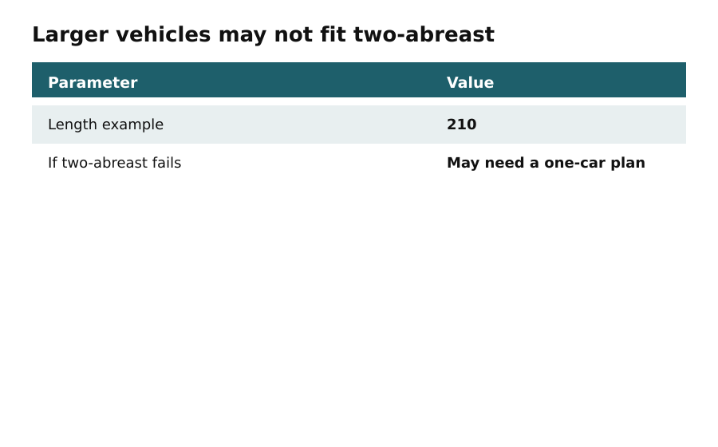
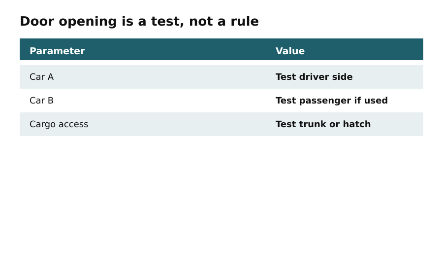

Assess
Two-car fit before any showroom layout
In this apartment
A US detached garage is labeled 20 by 20. After measuring to the lowest opener rail and both door tracks, the usable rectangle is smaller. One car is a compact hatchback; the other is a midsize SUV. Four bikes are planned for a side wall that sits in the SUV's door swing.
Record the actual garage and both vehicles. A labeled 20-by-20 bay is a reference, not proof that two cars and four bikes will fit.
Today's output: a filled Two-Car Fit Verification Sheet with both vehicles' length, width, mirror-to-mirror width, door-opening test, front and rear clearance, wall and bike clearance, walking route, and garage-door mechanism clearance.

Measure the interior at three points each way and keep the smallest numbers. Record clear height to the lowest obstruction: opener motor, tracks, torsion hardware, beams, water heater, electrical panel, steps, columns, ramps. Capture door opening width and where the open garage door sits. The paper size of the building is not the usable envelope.

Then measure each car: overall length and width, mirror-to-mirror width, and the space needed to enter and exit on the sides you actually use. Compact hatchbacks, sedans, SUVs, and larger vehicles are not interchangeable. Illustrative catalog ranges in this chapter are starting points only. Park both actual cars, open the doors, open the trunk or hatch, walk to the house or exit, and note every squeeze. If the sequence requires unsafe pinching or repeated repositioning, revise the layout before buying mounts.

Wall-mounted bikes steal door swing and walking width. Handlebars, pedals, and racks count. Emergency access paths must stay clear of vehicles, storage, and display. Parking aids must not become trip hazards. Apartment or stilt parking may forbid this entire project; confirm permissions before measuring for a showroom.





Do this
- Measure usable interior width, depth, and lowest height.
- Record Car A and Car B length, width, mirrors, and a real door-opening test.
- Park both cars and walk the exit path before choosing a wall for bikes.
Today's output
- Fit sheet filled
- Both cars parked and tested
- Unresolved constraints listed